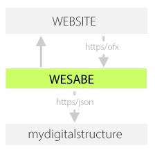

GETTING STARTED
|
|
mydigitalstructure & Wesabe Wesabe can be used in any implementation that requires repetitive information input into mydigitalstructure, that would typically be done by a human gathering information from a website. The Websabe engine is not part of the mydigitalstructure platform - to use it as a developer or system integrator, you would need to host run it on a Linux service (eg AWS, Azure) and configure and manage it yourself. After gathering the information from the website as json structured file, that data can be posted to mydigitalstructure for storage and processing. A typical use case for Wesabe is to gather information from a financial instibution - in this case to accept the json data and process it against existing mappings you would use: |
More information:
- Server-Side Uploader, the data aggregation engine on Github
github
- SIGA = Structured Information Gathering Automation
- ReadWriteWeb Article
Special Note:
Extra special thanks to the guys at Wesabe that made this open source.
| Wesabe on Github |
|  |